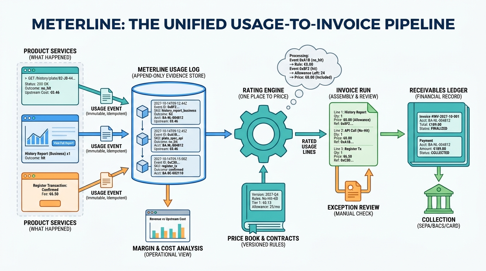

Part V — SAAS: Tenants, Access and the Commercial Model
Subscriptions, Lookups and No-Hit-No-Fee: Billing and Metering

Image generated by Google Gemini (gemini-3-pro-image-preview)
Part V — SAAS: Tenants, Access and the Commercial Model

Image generated by Google Gemini (gemini-3-pro-image-preview)